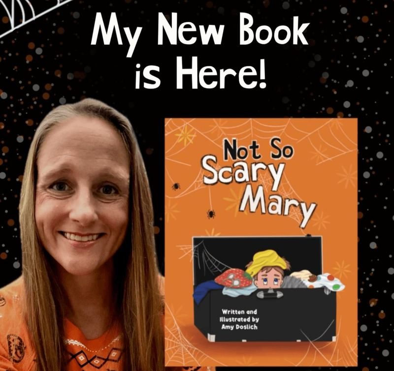

✦
✿
🌷 MOM CREATOR SPOTLIGHT
Meet Amy Doslich.
@amyd_mom_author
Books, motherhood, kid questions and the kind of reading magic that makes children feel like they are part of the story.
📚 Children's Books
🫶 Mom & Author
💬 Kids Ask Authors

WE THINK
YOU'LL
LOVE HER
YOU'LL
LOVE HER
MomYouNeedThis says:
We found someone making books feel a whole lot more interactive. 📚